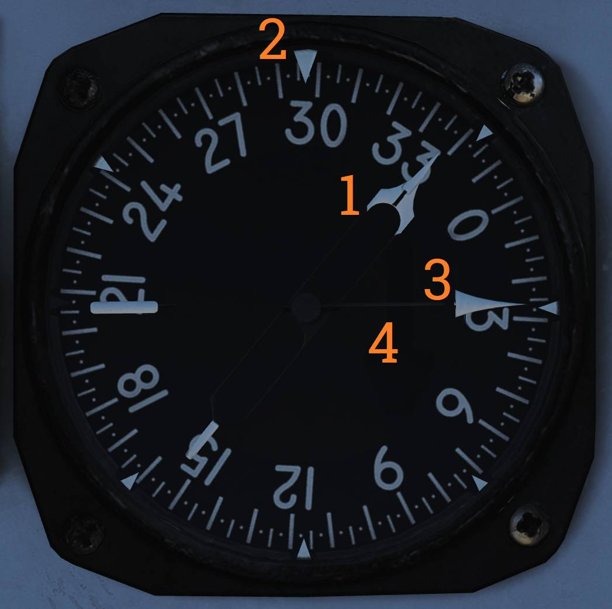

Right Instrument Panel
💡 The Right Instrument Panel consists of the:
- Clock (
1 )- ALR-67 Indicator (
2 )- Fuel Quantity Totalizer (
3 )- Threat Advisory and Master Caution Lights (
4 )- Bearing Distance Heading Indicator (BDHI) (
5 )- Canopy Jettison Handle (
6 )- Landing Checklist (
7 )

Clock
Mechanical wind-up clock(

The wind/set knob (
- Rotate clockwise to wind the clock.
- Pull out and rotate to set the hour and minute hands.
The elapsed-time control (
ALR-67 Blank (RWR now displayed on ECMD)
The PMDIG section of this manual has a detailed explanation of the ECMD RWR symbology.
Fuel Quantity Totalizer
The fuel quantity totalizer (

Threat Advisory and Master Caution Lights
Master caution light and ECM/IFF advisory and warning indications(

The MASTER CAUTION light and reset button flashes to indicate a status change on the RIO caution/advisory panel.
Press to acknowledge and extinguish the light until the next event.
ALR-67 Caution Lights
| Indicator | Function |
|---|---|
| IFF | Advisory light indicating received mode 4 interrogation without own system generating a reply. |
| RCV | Advisory light indicating ALQ-126 is receiving a threat identification signal. |
| XMIT | Advisory light indicating ALQ-126 is transmitting. |
| SAM | Warning light, steady illumination when detecting lockon from a SAM tracking radar. Flashes when a missile launch is detected. |
| AAA | Warning light, steady illumination when detecting lockon from a AAA tracking radar. Flashes when AAA engagement is detected. |
| CW | Warning light indicating detection of a continuous wave emitter. |
| AI | Warning light, steady illumination when detecting lockon from an airborne interceptor radar. |
Bearing Distance Heading Indicator (BDHI)
Display indicating azimuth, distance and bearing information (

No. 2 Bearing Pointer
The No. 2 bearing pointer (
Compass Rose
The compass rose (
No. 1 Bearing Pointer
The No. 1 bearing pointer (
Distance Counter
The distance counter (
(Not visible in the referenced image.)
Canopy Jettison Handle
The canopy jettison handle (